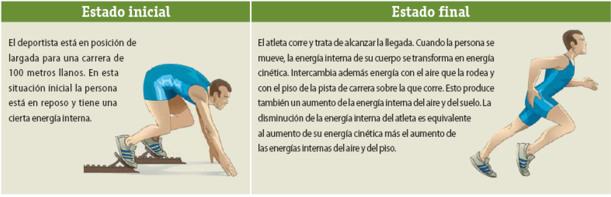
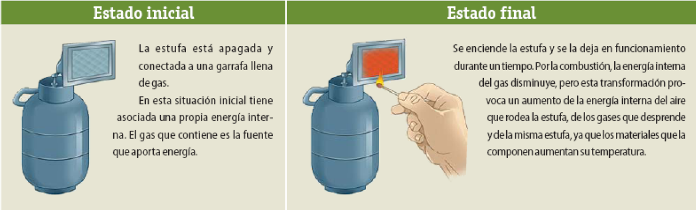
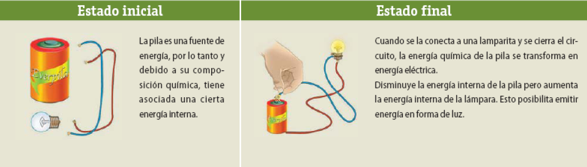

Los sistemas
Una de las propiedades de la energía es la capacidad de pasar de una forma a otra. Para identificar cuáles son estas transformaciones en un cuerpo o sistema, es necesario describir la situación energética inicial y la final, luego de los cambios que se evidencian en dichos cuerpos. Veamos ejemplos:
Un atleta a punto de largar en una carrera de 100 metros llanos.
Una estufa de gas que se enciende por un tiempo para calentar una habitación.
Una pila se conecta a una lamparita de una linterna para hacerla funcionar.
Dos personas suben un sillón hasta el 5° piso de un edificio utilizando una polea.
En la situación energética inicial, tanto las personas como el sillón carecen de energía potencial gravitatoria respecto del suelo porque se encuentran sobre él, es decir que se encuentran a altura cero. Las personas, por supuesto, tienen energía interna.
En la situación energética final, el sillón tiene energía potencial gravitatoria porque se encuentra a la altura del 5° piso; en las personas disminuyó la energía interna, y la soga se calentó por fricción con la polea.
La fábrica eléctrica, mediante la combustión del carbón (energía calórica), logra el movimiento de las turbinas (energía cinética) que genera la energía eléctrica.
Esa energía eléctrica se convierte nuevamente en calor (estufa y planchas eléctricas), en movimiento o energía cinética (tren eléctrico, motores), en energía potencial (la grúa que coloca a cierta altura los bultos que descarga un camión).
Un auto de carrera detenido en la largada al bajar la bandera comienza la carrera
En la situación energética inicial, el auto no tiene energía cinética porque está detenido, pero sí tiene energía interna, por lo menos en el combustible.
En la situación energética final, el auto tiene energía cinética. La energía interna en su combustible es mucho menor que en la situación inicial y, seguramente, se elevó la temperatura de varias de las partes del automóvil.